Tema 03 - Técnicas y herramientas de protecciónIntroducción: la seguridad empieza aquíPilares de la seguridad – Triada CIA🔴1. Confidencialidad🔵2. Integridad 🟢3. DisponibilidadBuenas prácticas esencialesHerramientas de protección más comunes🛡️ Antivirus y Antimalware🧬 VirusTotal: De Málaga al mundo🖥️ Endpoints🔥 Firewalls (Cortafuegos)🧪 Práctica: Explorando Windows Defender y el Firewall de Windows🆚 Comparativas de software de protección🕵️ IDS / IPS (Sistemas de detección y prevención de intrusiones)🔐 Cifrado🧪 Práctica: Cifrar carpetas con EFS y pendrive con BitLocker🌐 VPNs (Redes Privadas Virtuales)🧪 Práctica: VPN gratuita🔒 Gestores de contraseñas🔑 Autenticación multifactor (MFA)🧪 Práctica: MFA🕵️♀️ Caso realPolíticas de seguridad en el entorno laboral🏢Políticas clave más habituales⚠️ Consecuencias de no cumplirlas📃 Ejemplos de situaciones reales
Tema 03 - Técnicas y herramientas de protección
Introducción: la seguridad empieza aquí
Hasta ahora hemos visto las amenazas que acechan a nuestros sistemas y las vulnerabilidades, que son puertas abiertas listas para ser atacadas.
Ahora es momento de hablar de las técnicas y herramientas que usamos para defendernos. Esto es lo que separa a una empresa segura de un caos con ordenadores infectados y archivos secuestrados.
La seguridad no es solo tener un antivirus o poner una contraseña larga.
Es una combinación de hábitos, herramientas, normas y sentido común.
Es como cuidar tu casa: no basta con cerrar la puerta, también necesitas una buena cerradura, mirar por la mirilla y no dejar las llaves bajo el felpudo.
En este tema vamos a ver cómo podemos proteger nuestros sistemas, redes y datos. Tanto a nivel de usuario, como desde la perspectiva de una empresa.
Note
🧯La mejor defensa no siempre es un ataque... pero sí un buen firewall.
Pilares de la seguridad – Triada CIA
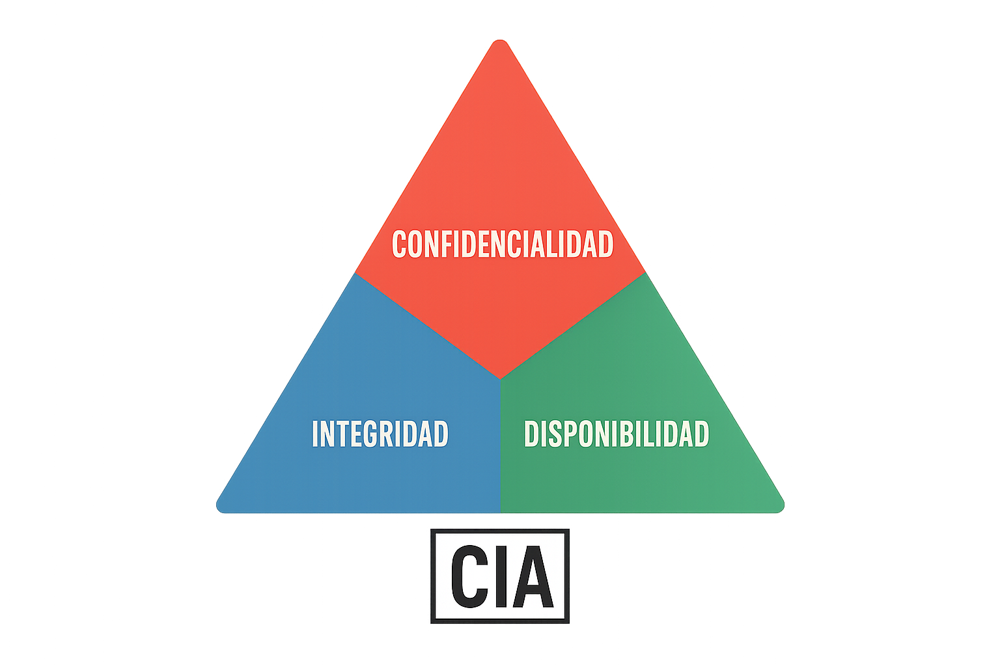
En el Tema 1 ya asomamos la cabeza al concepto de la tríada CIA, esos tres pilares sobre los que se construye toda la seguridad informática: Confidencialidad, Integridad y Disponibilidad. Vamos a profundizar un poco más en ellos.
Este modelo se usa a nivel mundial como base para diseñar políticas de seguridad en cualquier organización, tanto pública como privada.
Cuando hablamos de seguridad informática, todo gira en torno a tres grandes pilares. Tres objetivos fundamentales que deben cumplirse para que podamos decir que un sistema está bien protegido:
🔴1. Confidencialidad
Significa que solo las personas autorizadas pueden acceder a la información.
Imagina que estás en una empresa y tienes un archivo con las nóminas de todos los empleados. ¿Quién debería poder verlo? Seguramente solo el responsable de RRHH y, como mucho, el jefe de administración.
Si ese archivo termina en manos de toda la plantilla… ¡mal asunto! Habría una violación de la confidencialidad.
¿Cómo se protege la confidencialidad?
Usando contraseñas fuertes y únicas.
Estableciendo permisos de acceso: quién puede ver, editar, borrar...
Aplicando cifrado a los datos sensibles, tanto si están guardados como si se están enviando.
Evitando miradas indiscretas: ¡ojo con dejar la sesión abierta o los documentos a la vista!
Note
En este tema solo estamos introduciendo las bases. En los siguientes bloques del curso (especialmente en el Tema 4) veremos con más detalle cómo se gestionan los accesos, las contraseñas y otras herramientas de protección personal y empresarial.
Tip
Por lo pronto, ve acostumbrándote a usar Windows + L.
🔵2. Integridad
Se trata de asegurarse de que los datos no se han modificado de forma no autorizada.
Es decir, que la información es exacta, completa y confiable.
🔍Ejemplo: Alguien entra en una base de datos de clientes y cambia los números de cuenta... aunque no haya robado nada, ha comprometido la integridad de la información. Y eso puede tener consecuencias muy graves.
¿Cómo se protege la integridad?
Usando sistemas de control de cambios (por ejemplo, GIT en programación, historial de versiones en ofimática, etc.).
12024-11-04 10:15] Usuariojlopez — modificó el campo 'email' del cliente 109222024-11-04 10:18] Usuarioadmin — revirtió los cambios del campo 'email'Aplicando firmas digitales o hashes para verificar que un archivo no ha sido alterado.
Estableciendo políticas de autenticación y control de accesos: solo ciertos usuarios pueden modificar ciertas cosas.
Note
Más adelante en el curso veremos con más detalle qué herramientas específicas se utilizan en los entornos profesionales para controlar cambios y proteger la integridad de los datos.
Tip
La integridad no es que los datos estén bonitos, es que estén como deben estar. Y si ha habido cambios, que se puedan rastrear.
🟢3. Disponibilidad
La disponibilidad (availability en inglés) garantiza que la información, los sistemas y los servicios estén accesibles cuando se necesitan.
Porque no sirve de nada tener datos súper seguros y perfectamente íntegros… si no puedes acceder a ellos justo cuando los necesitas.
🔍 Ejemplo: Imagina una empresa que vende por internet. Si su página web se cae justo en el momento del Black Friday, no solo pierde ventas: pierde clientes, reputación y confianza.
🔍 Ejemplo: Un hospital que no puede acceder a los historiales médicos por un fallo en el servidor. El impacto es brutal y puede costar vidas.
¿Qué puede afectar a la disponibilidad?
Averías en el hardware o fallos eléctricos.
Errores humanos (alguien borra por accidente un archivo crítico).
Ataques como los DDoS (saturación de servidores), ransomware o sabotajes internos.
Desastres naturales o incendios en centros de datos (sí, pasa más de lo que crees).
¿Medidas para proteger la disponibilidad?
Copias de seguridad (backups)
Ya sea en la nube, en discos externos o en servidores alternativos. Si algo falla, tienes una copia para restaurar.Redundancia
Tener sistemas “duplicados” listos para entrar en acción si los principales fallan.
Ejemplo: un segundo servidor web activo en otra ciudad. Tener uno al lado delSistemas de alimentación ininterrumpida (SAI)
Para que no se apague todo si se va la luz.Planes de recuperación ante desastres (DRP)
Protocolos claros para actuar rápido si algo se cae o deja de funcionar.Mantenimiento preventivo
Actualizar software, revisar hardware, comprobar que las copias de seguridad funcionan... no esperar a que se rompa para actuar.Sistemas de monitorización
Herramientas que vigilan si todo está funcionando y avisan ante fallos o comportamientos extraños.
Warning
La disponibilidad es vital para cualquier negocio. Un fallo de unas horas puede suponer pérdidas económicas, quejas de clientes o incluso responsabilidades legales.
Tip
La seguridad no es solo evitar que te roben. También es asegurarte de que puedes seguir trabajando pase lo que pase.
Important
En resumen, si conseguimos mantener Confidencialidad, Integridad y Disponibilidad, estamos protegiendo lo más importante.
A esta tríada se la conoce como el modelo CIA (en inglés: Confidentiality, Integrity, Availability) y es la base de cualquier política de seguridad seria.
Buenas prácticas esenciales
Antes de sacar herramientas sofisticadas, la mejor defensa empieza con el sentido común.
No todo depende del antivirus o del firewall… muchas veces los fallos vienen de nuestros propios hábitos como usuarios.
Estas son algunas de las prácticas que cualquier persona (da igual su nivel técnico) debería seguir si quiere mantener sus sistemas y datos a salvo:
💡 Bloquea tu equipo si te levantas
Dejar la sesión abierta mientras vas al baño es como dejar la puerta de casa sin cerrar.
En una oficina o espacio compartido, cualquiera podría acceder a tu equipo y hacer de las suyas.Tip
Usa Windows + L (Windows), Ctrl + Command + Q (Mac) o Ctrl + Alt + L (algunos entornos Linux) para bloquear la pantalla al instante.🔎 Ejemplo casi real: En 2008 en Ohio, David Marshall no bloqueó su terminal al salir un momento al baño. Mientras su ordenador estaba desbloqueado e indefenso, su compañero William Thomas le puso un pepino muy gordo como fondo de pantalla 🥒. Desde entonces David aprendió la lección y nunca más dejó su terminal sin bloquear.
📬 No abras correos sospechosos (aunque vengan con “urgencia”)
El phishing es una de las técnicas más comunes para robar credenciales o instalar malware.
Un correo que parece venir del banco, de la Agencia Tributaria o de Amazon puede ser falso.¿Pistas sospechosas?
Faltas de ortografía
Enlaces raros
Archivos adjuntos sin sentido
Amenazas tipo "se bloqueará tu cuenta en 24 horas"
Caution
Si algo parece demasiado urgente o demasiado bueno para ser verdad… probablemente sea un intento de engaño.🔎 Ejemplo real: Abre tu bandeja de SPAM o correo no deseado y elige el phishing que más te guste.
🧊 No conectes pendrives desconocidos
Ya sea en la calle, en un evento o en el trabajo, nunca conectes un dispositivo USB que no sepas de dónde viene.
Puede contener software malicioso que se ejecuta al instante.Note
Hay casos reales en los que pendrives infectados se han usado para infiltrarse en redes corporativas. Literalmente: “lo encontré en el parking”.🔎 Ejemplo real: En 2022, hackers enviaron pendrives falsos haciéndose pasar por instaladores de Microsoft Office. Al conectarlos, se ejecutaba malware para robar información. Noticias en El Español y en Cadena Ser.
🧼 Mantén tu software actualizado
Sí, lo sé… esos avisos de actualización son molestos. Pero muchas veces incluyen parches de seguridad que corrigen fallos graves.
Cuanto más tiempo esperas, más tiempo tienen los atacantes para aprovecharse de esos fallos.🔎 Ejemplo real: El famoso ataque de ransomware WannaCry (2017) aprovechó una vulnerabilidad que ya había sido corregida por Microsoft. Miles de empresas no habían actualizado. Noticia en Kaspersky.
🔎 Ejemplo real muy reciente: Incidente de julio de 2024 (CrowdStrike). Un fallo masivo afectó a 8,5 millones de dispositivos Windows en todo el mundo debido a una actualización defectuosa del antivirus CrowdStrike. Noticias en Euronews, Bussiness Insider, La razón.
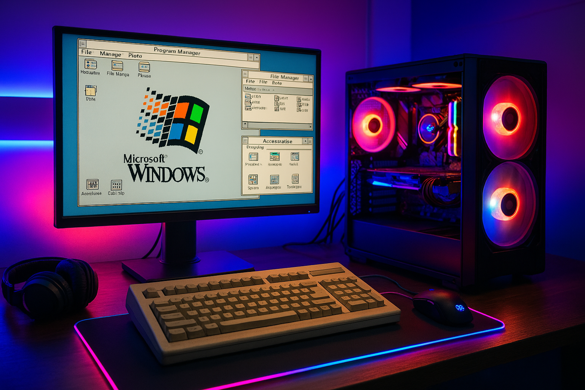
🔐 No compartas contraseñas (ni por WhatsApp)
Parece obvio, pero muchas veces se comparten claves por correo, notas o mensajes.
Eso equivale a dejar la llave bajo el felpudo. Si alguien accede, tú serás el responsable.Important
Las contraseñas deben ser personales, intransferibles y… ¡las veremos bien en el siguiente tema!🔎 Ejemplo real
Un ejemplo real de despido por compartir contraseñas voluntariamente se encuentra en una sentencia del Tribunal Superior de Justicia de Castilla-La Mancha (2022). Una empleada cedió sus credenciales de acceso a un compañero para que realizara ventas en su nombre y así incrementar sus comisiones. La empresa la despidió por vulnerar la buena fe contractual y cometer abuso de confianza, ya que el acto permitió que otro trabajador atribuyera operaciones comerciales falsas a su cuenta. Enlace a la noticia.
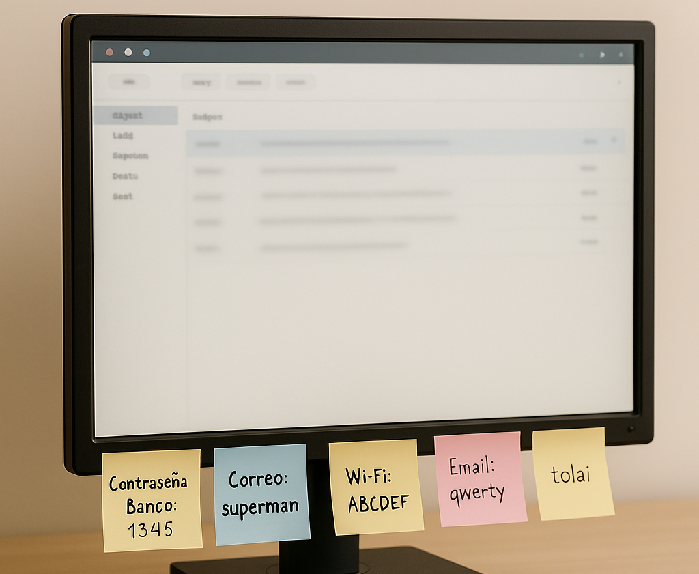
📁 Haz copias de seguridad periódicas
Porque el desastre no avisa. Un fallo de disco, un virus, o simplemente un error humano pueden hacer que pierdas información crítica.
Lo ideal es tener copias automáticas en la nube o en discos externos (y comprobar que realmente se están haciendo).🔎 Ejemplo real: El ayuntamiento de Jerez sufrió un ciberataque que cifró todos sus archivos. No tenían copias de seguridad actualizadas, lo que retrasó la recuperación semanas. Noticia en El Diario de Jerez
🔎 Ejemplo real: El ciberataque al SEPE en marzo de 2021 reveló graves deficiencias en sus sistemas de seguridad, incluida la ausencia de copias de seguridad adecuadas. Para restaurar su página web, el SEPE recurrió a una versión archivada en Wayback Machine de diciembre de 2020 (una organización sin ánimo de lucro que hace backups de webs). Esta medida improvisada sugirió que los técnicos no tenían acceso a backups internos actualizados. Noticias en Azlo.es y Una al día.
Herramientas de protección más comunes
Las buenas prácticas son el primer paso, pero en un entorno profesional (y también en casa), necesitamos herramientas específicas que nos ayuden a protegernos de amenazas reales.
Estas herramientas forman parte del arsenal básico de ciberseguridad y están presentes en prácticamente todas las organizaciones, desde una pyme hasta un centro de datos internacional.
Note
No es necesario saber configurarlas a fondo (eso se verá más adelante si hace falta), pero sí es importante saber qué hacen, para qué sirven y cuándo usarlas.
A continuación, veremos las más habituales:
🛡️ Antivirus y Antimalware
Durante mucho tiempo, la palabra "antivirus" era sinónimo de seguridad informática. Pero hoy en día, los virus son solo una pequeña parte del problema.
Por eso, los programas actuales incluyen también protección contra spyware, ransomware, troyanos, keyloggers, rootkits, etc. En resumen: se habla más de antimalware que de antivirus a secas.

🔵¿Qué es un antivirus/antimalware?
Es una herramienta que detecta, bloquea y elimina software malicioso (también llamado "malware") que puede haber entrado en el sistema.
Este tipo de software actúa como un guardián digital, siempre alerta ante cualquier archivo o comportamiento sospechoso.
Tip
La mayoría de antivirus modernos ya incluyen funciones antimalware, cortafuegos, protección web y más. Es como tener una navaja suiza de la seguridad.
🔵Tipos de análisis que realiza:
Análisis bajo demanda: lo activamos nosotros cuando queremos revisar si algo está infectado.
Análisis en tiempo real: supervisa continuamente los archivos que se abren, descargan o ejecutan.
Análisis programado: se ejecuta automáticamente en horarios definidos (por la noche, al iniciar el equipo, etc.).
🔵¿Qué puede detectar un buen antimalware?
Archivos sospechosos o infectados
Sitios web maliciosos o falsificados
Cambios sospechosos en el sistema (por ejemplo, que se desactive el firewall)
Actividad en segundo plano (procesos ocultos, conexiones salientes raras...)
🔵Ejemplos de antivirus / antimalware populares:
Windows Defender (integrado en Windows 10/11, muy competente)
Avast / AVG / Avira (gratuitos con opciones premium)
Bitdefender, Kaspersky, ESET (comerciales con funciones avanzadas)
Malwarebytes (muy eficaz contra malware moderno y complementario al antivirus tradicional)
Norton (muy extendido en entornos domésticos y preinstalado en muchos portátiles)
McAfee (otro clásico que suele venir instalado en equipos nuevos, especialmente en marcas como HP o Dell)
🧬 VirusTotal: De Málaga al mundo
VirusTotal es una plataforma en línea que permite analizar archivos y URLs en busca de malware utilizando múltiples motores antivirus. Fue creada en 2004 por la empresa malagueña Hispasec Sistemas, bajo la dirección de Bernardo Quintero, un apasionado de la ciberseguridad nacido en Vélez-Málaga.
En 2012, Google adquirió VirusTotal, reconociendo su valor en la lucha contra el malware. A pesar de que Google ofreció trasladar al equipo a Silicon Valley o Zúrich, Quintero y su equipo decidieron permanecer en Málaga, priorizando la calidad de vida y su compromiso con el talento local. Google respetó esta decisión, lo que llevó a la creación de un centro de ciberseguridad en la ciudad.
Gracias a esta apuesta, en 2023 se inauguró en Málaga el Google Safety Engineering Center (GSEC), el primer centro de excelencia en ciberseguridad de Google en Europa. Este centro no solo refuerza la posición de Málaga en el mapa tecnológico, sino que también colabora estrechamente con la Universidad de Málaga en formación e investigación en ciberseguridad.
Tip
La historia de VirusTotal es un ejemplo inspirador de cómo la innovación y el compromiso local pueden tener un impacto global en el mundo de la tecnología y de una ciudad.
Note
A fecha 26 de marzo de 2025, se ha propuesto nombrar a Bernardo Quintero como hijo adoptivo y que reciba la medalla de la ciudad de Málaga, por su contribución a la Málaga tecnológica y la retención del talento local. Noticia en Málaga Hoy
Web oficial: www.virustotal.com
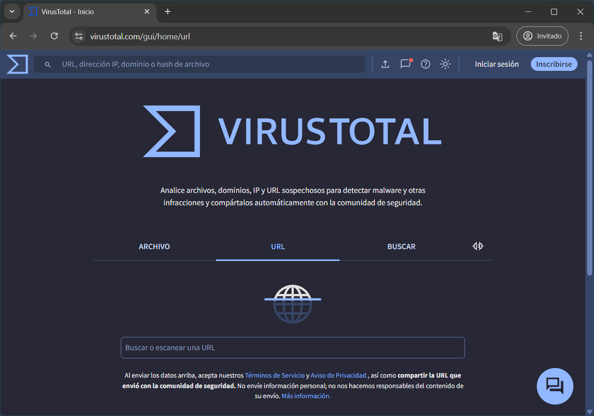
🖥️ Endpoints
En el mundo de la ciberseguridad profesional, se habla mucho de los endpoints.
Un endpoint es cualquier dispositivo que se conecta a una red: ordenadores, móviles, tablets, impresoras, etc.
Cada uno de ellos puede ser un punto de entrada de amenazas, y por eso es clave protegerlos.
Cuando una empresa habla de "seguridad de endpoint", se refiere a una solución más completa que no solo incluye antivirus, sino también:
Protección contra malware
Control de dispositivos USB
Firewall local
Cifrado del disco
Supervisión remota del estado de seguridad
Control de aplicaciones y acceso
Note
El antivirus que instalas en casa es una herramienta de protección. Pero en las empresas, se usan soluciones de endpoint que permiten gestionar todos los dispositivos desde un solo panel centralizado.
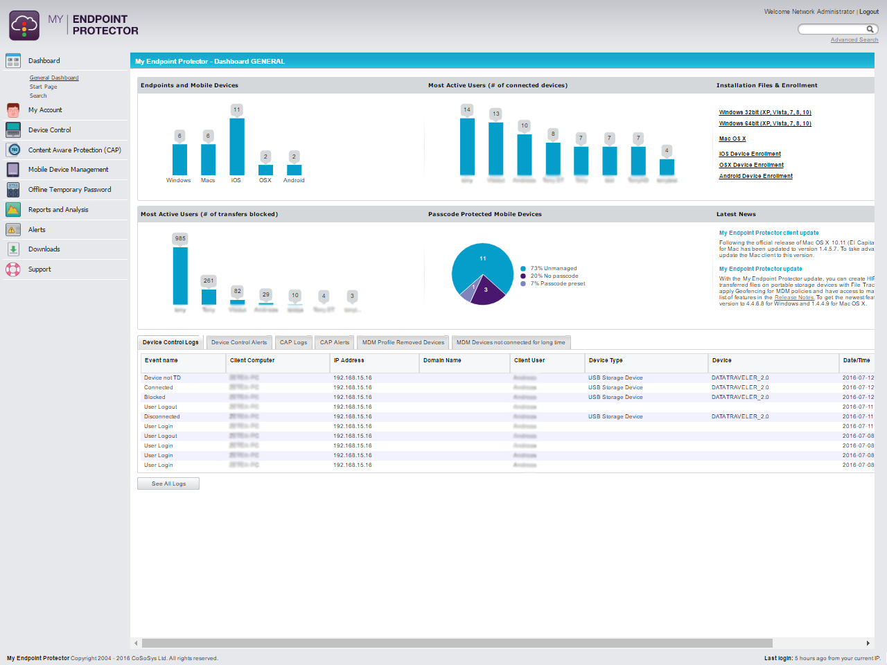
Este concepto lo veremos con más profundidad más adelante, cuando hablemos de seguridad en redes y entornos empresariales, pero para que no te suene a chino cuando lo veamos.
🔥 Firewalls (Cortafuegos)
Imagina tu ordenador como una casa con puertas y ventanas.
Un firewall (o cortafuegos) es como un portero en la entrada: decide qué entra y qué sale de tu sistema a través de la red.
No detiene a los virus directamente, pero controla el tráfico de red para evitar accesos no autorizados o conexiones peligrosas.
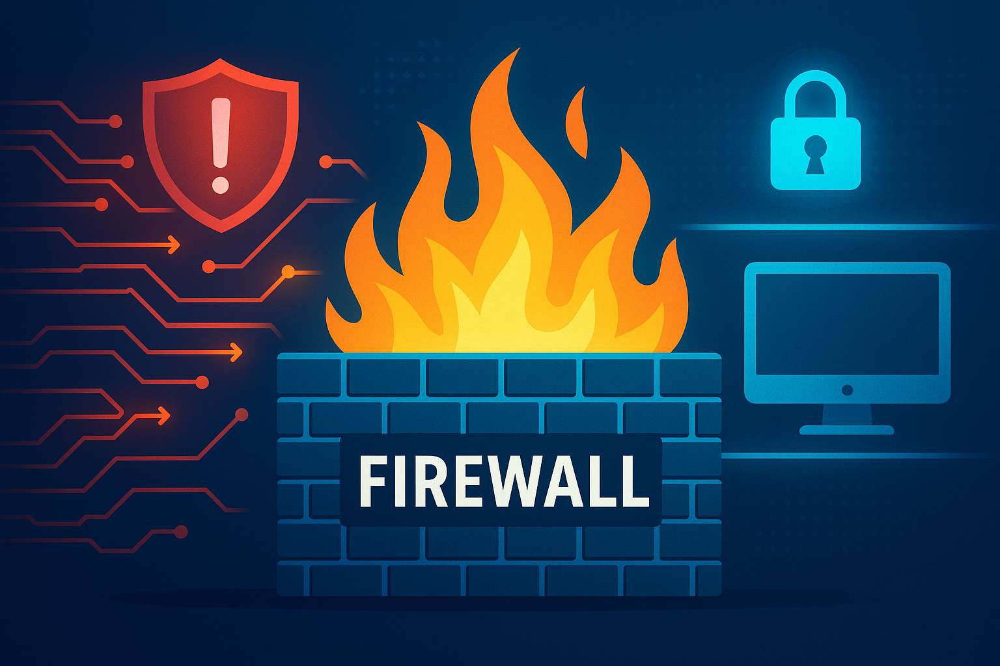
🟠¿Qué es exactamente un firewall?
Un firewall es un sistema que filtra las comunicaciones que entran y salen de un dispositivo o red, bloqueando o permitiendo el tráfico según unas reglas establecidas.
Por ejemplo:
Si un programa intenta conectarse a Internet sin permiso, el firewall puede bloquearlo.
Si alguien intenta acceder a tu equipo desde fuera de la red, también puede detenerlo.
Warning
El firewall no analiza si un archivo está infectado, pero sí puede impedir que un virus se conecte a un servidor para descargar más malware o para propagarse a otros sistemas.
🟠Tipos de firewalls:
Firewall de software
Está instalado en el propio dispositivo.
Controla el tráfico hacia y desde ese ordenador.
Ejemplo: Firewall de Windows, ZoneAlarm, Comodo.
Firewall de hardware
Es un dispositivo físico (una especie de router inteligente).
Se coloca entre la red interna y la conexión a Internet.
Suele usarse en empresas, ya que protege toda la red corporativa.
Firewalls personales vs. empresariales
En casa, el firewall suele ser un programa simple que pregunta "¿permitir esta conexión?".
En empresas, los firewalls tienen reglas complejas, registros, zonas de confianza y gestión centralizada.
🟠¿Qué puede hacer un firewall?
Bloquear puertos no utilizados.
Detectar conexiones sospechosas o no autorizadas.
Permitir solo ciertos programas a través de la red.
Registrar intentos de intrusión o conexión.
🟠Ejemplos prácticos:
Impedir que un programa "pirata" intente enviar información hacia fuera.
Evitar que un ciberdelincuente acceda al equipo desde fuera de la red.
Autorizar solo a ciertas apps (como Zoom o Spotify) para usar Internet.
🟠¿Qué firewall puedes tener en tu ordenador ahora mismo?
Windows incluye un firewall por defecto que funciona bastante bien y está activado por defecto.
Muchos antivirus también incluyen su propio firewall mejorado (Bitdefender, Norton, Kaspersky…).
Caution
Si tienes dos firewalls activados a la vez (por ejemplo, el de Windows y el de tu antivirus), pueden entrar en conflicto. Lo ideal es usar solo uno principal.
🟠 Firewalls de nueva generación (NGFW)
Hoy en día, muchos dispositivos que se venden como "firewall" en realidad son NGFW, siglas de Next Generation Firewall o Cortafuegos de Nueva Generación.
Tip
Un NGFW es como un firewall con superpoderes: no solo mira las puertas (puertos), sino también qué hay dentro de los paquetes y qué están intentando hacer.
🔶¿Qué pueden hacer los NGFW?
Inspección profunda de paquetes (Deep Packet Inspection)
Detección y prevención de ataques (como un IPS integrado)
Control de aplicaciones (por ejemplo: bloquear TikTok en horario laboral, o Dropbox por seguridad)
Autenticación de usuarios (saber quién se está conectando)
Integración con antivirus o servicios en la nube
🔶¿Dónde se usan?
En empresas, centros de datos y redes donde se necesita más control y visibilidad.
Algunas marcas conocidas: Palo Alto, Fortinet, Cisco Firepower, Sophos, Check Point…
Note
Muchos firewalls domésticos siguen siendo básicos, pero en entornos empresariales lo normal es usar NGFW, ya que permiten una protección más completa y una gestión centralizada.
🔶Ejemplo de NFGW: Fortigate de Fortinet
FortiGate es una línea de cortafuegos de nueva generación desarrollada por la empresa Fortinet, muy utilizada en empresas, administraciones públicas y centros educativos.
¿Qué ofrece?
✅ Filtrado de tráfico (como cualquier firewall)
✅ Inspección profunda de paquetes (DPI)
✅ Sistema IDS/IPS integrado
✅ Protección contra malware y ransomware
✅ Control de aplicaciones (puedes bloquear o permitir apps específicas)
✅ VPN, segmentación de red, y más
✅ Panel de control web con visualización de alertas y estadísticas
Tip
Los FortiGate permiten ver, por ejemplo, qué usuarios están usando más ancho de banda, qué webs visitan, y si algún tráfico parece malicioso. Más adelante podremos instalar uno y probarlo.
🟠Firewall ≠ antivirus
No hacen lo mismo, aunque se complementan perfectamente:
El antivirus analiza archivos y programas en busca de malware.
El firewall controla qué conexiones están permitidas.
Important
Un buen sistema de seguridad necesita ambos: detección interna (antivirus) y defensa perimetral (firewall).
🧪 Práctica: Explorando Windows Defender y el Firewall de Windows
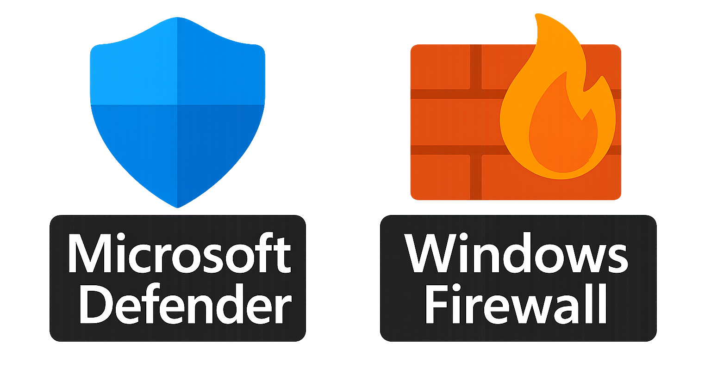
Ya hemos visto qué hacen y para qué sirven un antivirus y un firewall, así que ahora vamos a verlos en acción.
El antivirus Microsoft Defender
El Firewall de Windows
Ambos vienen preinstalados en Windows 10 y 11, y nos permiten tener una capa básica de seguridad sin instalar nada adicional.
🔍 Objetivo de la práctica
Verificar que el antivirus y el firewall estén activos.
Realizar un análisis rápido.
Revisar qué aplicaciones tienen acceso a Internet.
Entender la diferencia entre protección contra virus y control de tráfico.
🛡️ Parte 1 – Antivirus: Microsoft Defender
1. Abre el menú de inicio y busca: "Seguridad de Windows"
2. Haz clic en "Protección antivirus y contra amenazas"
3. Comprueba que pone algo como "No se requiere ninguna acción"
4. Haz clic en "Examen rápido" para lanzar un análisis básico
5. Entra en "Historial de protección" y revisa si hay alertas
Tip
Microsoft Defender se actualiza solo y suele ser más que suficiente para usuarios domésticos.
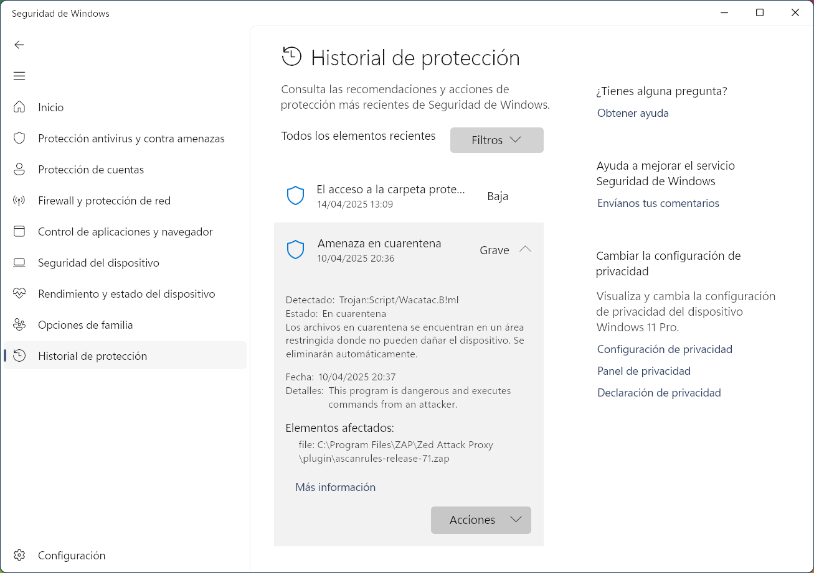
🔥 Parte 2 – Cortafuegos: Firewall de Windows
1. Vuelve al panel principal de Seguridad de Windows
2. Haz clic en "Firewall y protección de red"
3. Comprueba que esté activado en los tres perfiles (ver nota abajo):
Red de dominio
Red privada
Red pública
4. Haz clic en "Permitir una aplicación a través del firewall"
5. Revisa la lista: ¿Qué aplicaciones tienen acceso? ¿Con red pública o privada?
Warning
No borres nada, pero puedes apuntar los nombres de apps desconocidas para comentarlas en clase.
Note
¿Que es eso de los perfiles? Cuando conectas tu equipo a una red, Windows te pregunta si es una red privada, pública o de dominio.
Esta elección determina qué nivel de seguridad aplica el firewall automáticamente.
Red de dominio: Aparece si el equipo está conectado a una red corporativa.
Red privada: Se usa en redes domésticas o de confianza (como la de tu casa). Permite cierta comunicación con otros dispositivos (impresoras, carpetas compartidas, etc.)
Red pública: Es la más restrictiva. Se usa en lugares como cafeterías, aeropuertos o redes desconocidas. No permite conexiones entrantes no autorizadas. Es la opción más segura.
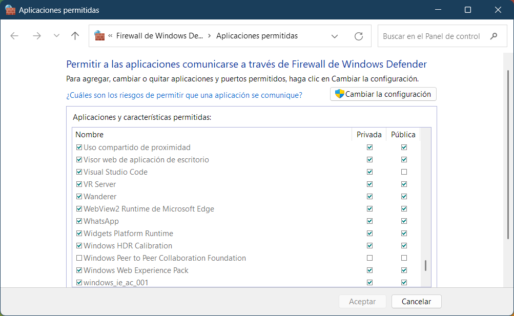
💬 Preguntas para debatir en clase
¿Estaba activado tu antivirus y tu firewall?
¿Alguna vez habías hecho un análisis manual?
¿Te sorprende alguna aplicación en la lista del firewall?
¿Crees que ahora entiendes mejor para qué sirve cada herramienta?
📌 Recordatorio final
Microsoft Defender y el Firewall de Windows forman una base sólida de protección.
Más adelante veremos herramientas más avanzadas y en otros sistemas operativos.
🆚 Comparativas de software de protección
| Antivirus | Web oficial | Precio base | Protección en tiempo real | Firewall incluido | Protección web | Plataforma | Otros servicios incluidos |
|---|---|---|---|---|---|---|---|
| Windows Defender | microsoft.com | Gratuito (Windows) | ✅ Sí | ✅ Sí | ✅ Sí | Windows | Integración con control parental y SmartScreen |
| Avast Free | avast.com | Gratuito | ✅ Sí | ❌ No | ✅ Sí | Windows / Mac / Android | Protección Wi-Fi, gestor de contraseñas (Premium) |
| AVG Free | avg.com | Gratuito | ✅ Sí | ❌ No | ✅ Sí | Multiplataforma | Herramientas de rendimiento, protección web (Premium) |
| Malwarebytes | malwarebytes.com | Gratuito / Premium | ✅ (Premium) | ❌ No | ✅ (Premium) | Multiplataforma | Protección contra ransomware, exploit shield |
| Bitdefender | bitdefender.es | Desde 29,99 €/año | ✅ Sí | ✅ Sí | ✅ Sí | Multiplataforma | VPN (limitada), gestor contraseñas, antitracker |
| Kaspersky | kaspersky.es | Desde 34,99 €/año | ✅ Sí | ✅ Sí | ✅ Sí | Multiplataforma | VPN, gestor de contraseñas, protección identidad |
| ESET NOD32 | eset.es | Desde 29,90 €/año | ✅ Sí | ✅ (versión Smart) | ✅ Sí | Windows / Mac / Linux | Protección contra botnets, banca online segura |
| Norton Antivirus | norton.com | Desde 29,99 €/año | ✅ Sí | ✅ Sí | ✅ Sí | Multiplataforma | VPN, gestor de contraseñas, protección identidad, backup |
| McAfee | mcafee.com | Desde 29,95 €/año | ✅ Sí | ✅ Sí | ✅ Sí | Multiplataforma | VPN, gestor de contraseñas, protección para identidad y niños |
Note
Muchos de estos servicios adicionales varían según la versión contratada (Standard, Plus, Premium, etc.). En general, los paquetes más completos incluyen VPN, gestor de contraseñas y protección para varios dispositivos.
Important
Muchos antivirus gratuitos están bien para usuarios domésticos, pero en entornos empresariales se recomienda usar versiones de pago con soporte, control centralizado y protección en red.
Limitaciones:
No detectan todas las amenazas, especialmente si son muy nuevas (malware "zero day").
No sustituyen el sentido común: si haces clic en cualquier enlace o instalas cosas raras, ningún antivirus puede salvarte.
Recomendaciones:
Mantenerlo siempre actualizado: la base de datos de virus cambia constantemente.
No tener dos antivirus instalados al mismo tiempo (pueden interferirse entre sí).
Combinarlo con otras medidas como el firewall, copias de seguridad y formación en ciberseguridad.
Important
El antivirus no es una varita mágica. Es solo una parte del sistema de defensa. Sin buenas prácticas, no sirve de mucho.
🕵️ IDS / IPS (Sistemas de detección y prevención de intrusiones)
Los antivirus y firewalls protegen contra muchas amenazas, pero no son infalibles.
Por eso, en entornos más avanzados (como redes corporativas), se usan herramientas que vigilan todo lo que pasa en la red buscando señales de ataque.
Aquí entran en juego los IDS y los IPS.
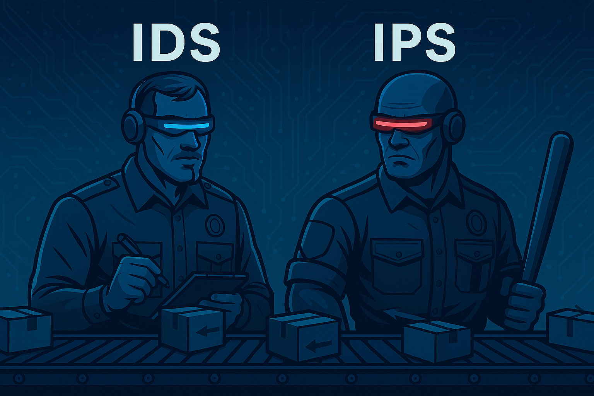
🟣¿Qué es un IDS?
IDS significa Intrusion Detection System (Sistema de Detección de Intrusos).
Es como un alarma silenciosa: analiza el tráfico de red y los sistemas en busca de comportamientos sospechosos o ataques conocidos.
No actúa directamente, solo detecta y genera alertas para que alguien revise qué está pasando.
Warning
El IDS no bloquea nada. Solo observa y avisa. Ideal para entornos donde no se quiere interrumpir el servicio sin intervención humana.
🟣¿Qué es un IPS?
IPS significa Intrusion Prevention System (Sistema de Prevención de Intrusos).
Hace lo mismo que un IDS… pero además actúa automáticamente.
Si detecta algo sospechoso, puede bloquear la conexión, aislar el equipo afectado, o cortar el tráfico peligroso.
Tip
El IPS es como un vigilante con reflejos rápidos: ve algo raro y reacciona en el momento. Golpe de remo.
🟣¿Dónde se usan los IDS/IPS?
En empresas con redes complejas o acceso a internet constante.
En servidores que ofrecen servicios al público (como webs, bases de datos, etc.).
En sistemas donde la disponibilidad y la integridad son críticas (bancos, hospitales, etc.).
🟣Ejemplos de herramientas IDS/IPS:
IDS
Snort – IDS muy utilizado y de código abierto, creado por Cisco.
Suricata – Similar a Snort, pero con mejoras en rendimiento.
OSSEC – IDS centrado en análisis de logs (muy útil para servidores).
Zeek (antes Bro) – IDS muy potente, usado en universidades y centros de investigación.
IPS
Snort en modo IPS – Aunque por defecto es un IDS, puede configurarse como IPS.
Suricata híbrido – Si se configura correctamente con un motor como NFQUEUE, puede usarse como IPS.
Cisco Firepower – Solución profesional que combina NGFW y un IPS avanzado. Muy usado en entornos empresariales.
Fortigate (Fortinet) – Incluye sistema IPS propio con análisis de tráfico en tiempo real, detección de amenazas y bloqueo automático.
🖥️ Simulación de salida de Snort tras detectar un ping ICMP
xxxxxxxxxx5104/15-10:27:58.234567 [**] [1:1000001:0] ICMP PING detected [**]2[Classification: Misc activity] [Priority: 3]310.0.0.15 -> 10.0.0.14ICMP TTL:64 TOS:0x0 ID:1234 IpLen:20 DgmLen:605Type: 8 Code: 0 ID: 12345 Seq: 0x1
🤔 ¿Qué significa esto?
04/15-10:27:58.234567 → Fecha y hora del evento
[1:1000001:0] → ID de la regla que ha saltado
ICMP PING detected → Descripción de la alerta
10.0.0.15 -> 10.0.0.1 → IP origen y destino del paquete
ICMP TTL:64... → Información técnica del paquete ICMP
Type: 8 Code: 0 → Tipo de paquete ICMP (8 = Echo Request, el famoso ping)
Tip
💊Puedes ver que es un ping ICMP en las píldoras.
🟣 Firewall ≠ IPS
A priori puede parecer que un firewall es lo mismo que un IPS, ya que ambos bloquean el tráfico de la red. Pero sus funciones, su enfoque y su “inteligencia” son distintas:
El firewall es como el portero de la discoteca: te deja entrar o no según tu DNI (IP, puerto…). Una vez dentro, ya no actúa.
El IPS es como el vigilante de seguridad que vigila dentro y actúa si alguien hace algo raro (pelea, drogas, etc.).
| Característica | Firewall | IPS (Intrusion Prevention System) |
|---|---|---|
| Qué protege | El acceso a la red o al dispositivo | El contenido del tráfico de red |
| Qué analiza | Direcciones IP, puertos, protocolos (reglas simples) | Patrones de ataque, firmas de malware, anomalías en el tráfico |
| Bloquea automáticamente | ✅ Sí | ✅ Sí |
| Detecta amenazas conocidas | ❌ No (solo controla acceso) | ✅ Sí (tiene base de firmas y detección de comportamiento) |
| Funciona en qué capa | Capas 3 y 4 (Red y Transporte) | Capas 4 a 7 (hasta Aplicación) |
| Ejemplo práctico | “No dejes pasar tráfico al puerto 3389” | “Ese tráfico parece un ataque SQL Injection, ¡bloquéalo!” |
Tip
Muchos firewalls modernos (NGFW) ya incluyen funciones de IPS, por lo que hoy en día muchas veces se combinan en un solo sistema y no es muy común ver IPS de forma individual, si no como servicio a otra solución más completa.
🟣Diferencias entre IDS y IPS:
| Característica | IDS | IPS |
|---|---|---|
| ¿Detecta amenazas? | ✅ Sí | ✅ Sí |
| ¿Actúa automáticamente? | ❌ No (solo avisa) | ✅ Sí (bloquea/preventivo) |
| ¿Puede afectar al tráfico? | ❌ No | ✅ Sí (puede cortar conexiones) |
| Ideal para... | Supervisión y análisis | Respuesta activa ante amenazas |
Important
En muchas soluciones modernas, los IDS y IPS vienen integrados en un único sistema combinado: detectan y previenen a la vez.
🔐 Cifrado
El cifrado es una técnica que transforma la información para que solo pueda ser leída por quien tenga la clave adecuada. Es como meter los datos en una caja fuerte: aunque alguien acceda a los archivos, no podrá entender su contenido sin la combinación correcta.
Lo usamos más de lo que creemos: en aplicaciones de mensajería como WhatsApp, al conectarnos a páginas web seguras (HTTPS), o al proteger un pendrive con contraseña.
Es una capa de protección esencial, sobre todo si trabajamos con datos sensibles o dispositivos móviles que pueden perderse o ser robados.
Note
La criptografía es el campo más amplio del que forma parte el cifrado. Ahora nos centramos solo en las herramientas prácticas. Más adelante veremos la criptografía con más profundidad, concretamente en el tema 8.
Entre las herramientas de cifrado más conocidas y accesibles encontramos:
🔒 BitLocker (Windows): Permite cifrar discos duros completos o memorias USB. Muy útil en entornos de empresa o si transportas información en un portátil.
🔐 VeraCrypt: Alternativa gratuita y multiplataforma. Permite cifrar archivos, carpetas, particiones o incluso crear contenedores cifrados que se montan como unidades virtuales.
📱 Cifrado automático en móviles: Android y iOS ya aplican cifrado por defecto a la memoria interna.
📂 Cifrado por software: Algunas apps permiten cifrar archivos al exportarlos, como 7-Zip, que puede proteger un archivo comprimido con contraseña y cifrado AES.
Estas herramientas permiten que, aunque un equipo caiga físicamente en malas manos, la información siga inaccesible.
Tip
El cifrado es especialmente importante en portátiles, pendrives y discos externos. Son los dispositivos que más fácilmente se pueden perder o robar.
🧪 Práctica: Cifrar carpetas con EFS y pendrive con BitLocker
🧪 Cómo cifrar una carpeta en Windows (sin programas adicionales)
Windows incluye una función de cifrado sencilla llamada EFS (Encrypting File System). Sirve para proteger carpetas y archivos para que solo el usuario actual del equipo pueda acceder a ellos.
Pasos para cifrar una carpeta:
Haz clic derecho sobre la carpeta que quieras cifrar.
Selecciona
Propiedades.Pulsa en
General>Opciones Avanzadas.Marca la opción
Cifrar contenido para proteger datosy haz clic enAceptar.Aplica los cambios y listo.
Deberá aparecer un icono con un candado sobre las carpetas y archivos afectados, indicando que están cifrados.
Tip
Este cifrado protege los archivos del usuario actual. Si otro usuario intenta acceder desde otro perfil o copia los archivos a otro equipo, no podrá abrirlos.
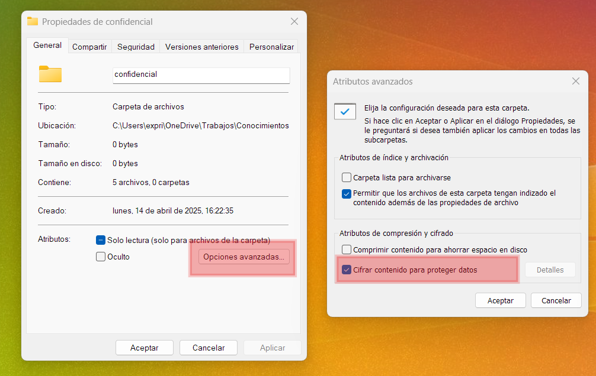
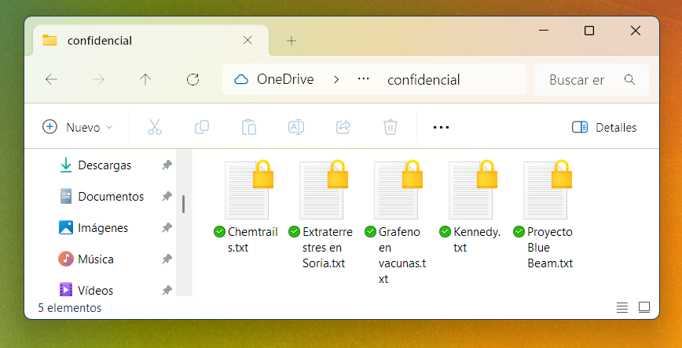
Note
EFS no está disponible en todas las ediciones de Windows (por ejemplo, en Windows Home no está). Si no te aparece la opción, puedes probar con otras herramientas como BitLocker o VeraCrypt.
🧪 Cómo cifrar un pendrive con BitLocker
BitLocker es una herramienta de cifrado integrada en Windows (excepto en las ediciones Home) que permite proteger discos duros y unidades externas como pendrives o discos USB.
Pasos para cifrar un pendrive:
Conecta el pendrive al equipo.
Abre el Explorador de archivos y haz clic derecho sobre la unidad USB.
Selecciona
Activar BitLocker.Elige el método de desbloqueo (por ejemplo, con contraseña).
Establece una contraseña segura.
Guarda la clave de recuperación (por si olvidas la contraseña).
Selecciona el modo de cifrado (nuevo o compatible con otros dispositivos).
Espera a que finalice el proceso… ¡y listo!
Tip
Una vez cifrado, nadie podrá acceder a los datos del pendrive sin la contraseña, incluso si lo conectan a otro equipo.
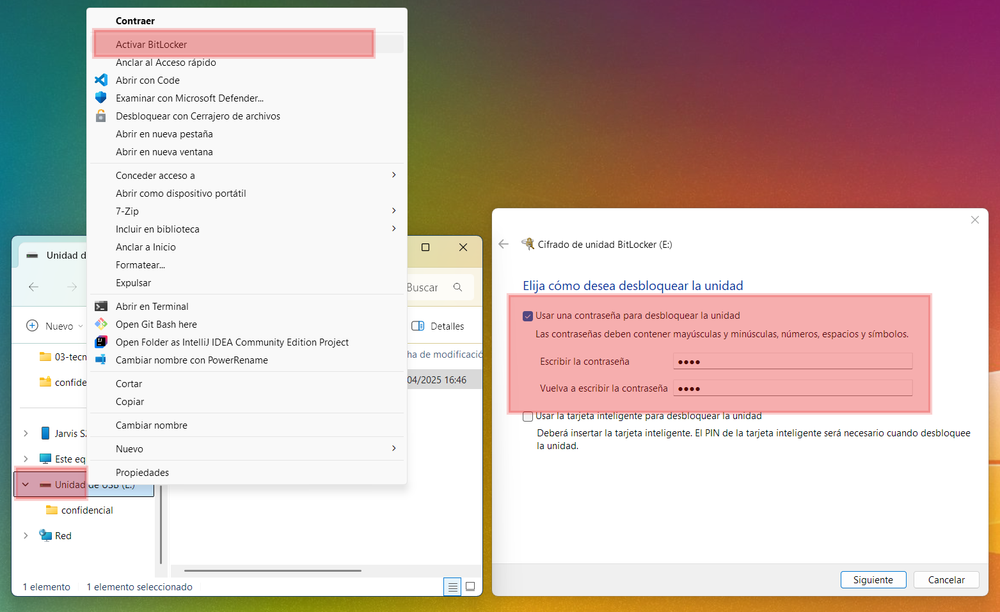
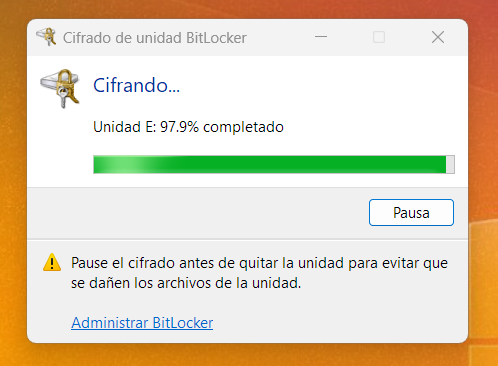
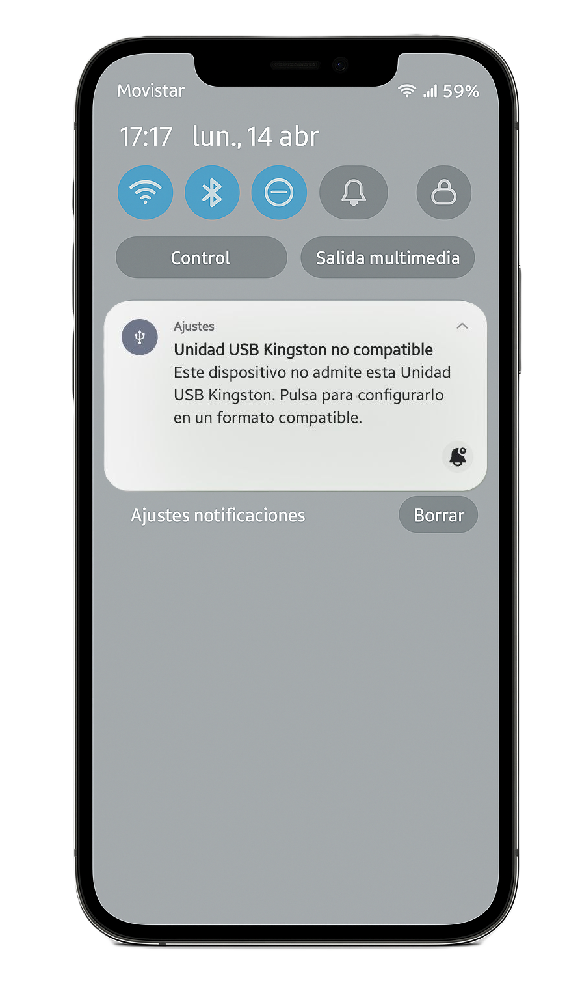
Note
BitLocker ofrece una buena protección para llevar datos de forma segura, especialmente útil si transportas información confidencial.
🌐 VPNs (Redes Privadas Virtuales)
Una VPN (Virtual Private Network) permite crear un túnel cifrado entre tu dispositivo y otro punto de Internet, como si estuvieras conectado desde una red privada aunque estés en una red pública.
Sirve para proteger tus datos en redes inseguras (como el Wi-Fi de una cafetería) y para ocultar tu IP real, ya que el tráfico pasa por el servidor de la VPN antes de llegar a su destino.
Tip
Cuando te conectas por VPN, es como si metieras tus datos en un tubo: nadie por fuera puede ver lo que estás enviando o recibiendo.
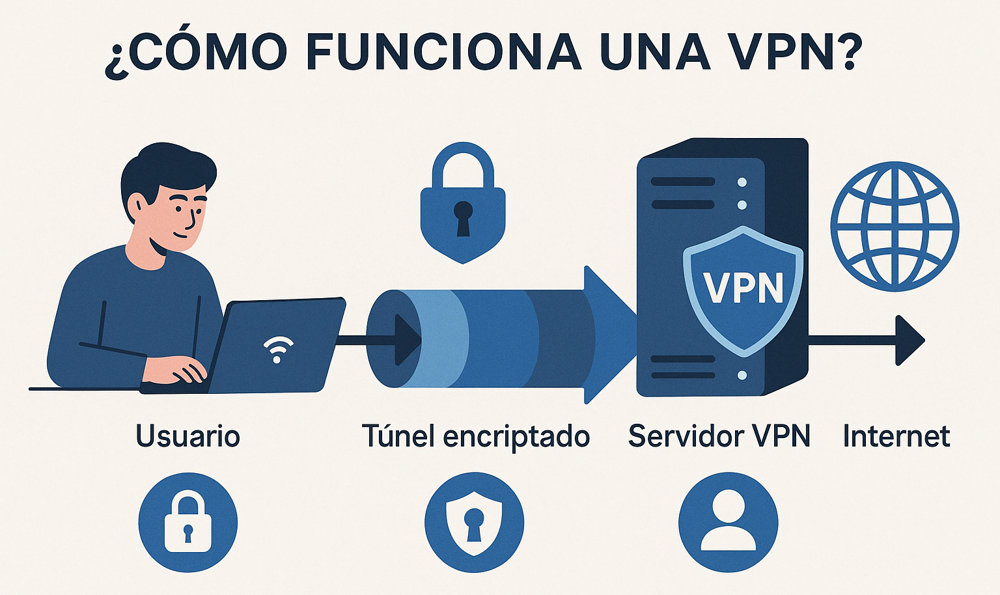
🟤¿Para qué se usan las VPN?
Para conectarte de forma segura a tu red del trabajo desde casa.
Para navegar con más privacidad.
Para evitar restricciones geográficas (aunque esto puede ser ilegal según el país).
En empresas, para que los empleados accedan a servidores internos de forma protegida.
🟤Ejemplos de servicios y herramientas VPN:
VPN corporativas: Acceso remoto a la red de empresa (con autenticación y cifrado).
VPN comerciales: ProtonVPN, NordVPN, ExpressVPN… se enfocan en privacidad personal.
VPN gratuitas: algunas opciones limitadas, pero pueden ser útiles para aprender (ej: Windscribe, TunnelBear).
Integradas en el sistema: Windows, Android y iOS permiten conectarse a una VPN manualmente desde los ajustes de red.
Note
Muchas empresas combinan el uso de VPN con autenticación multifactor para mayor seguridad.
🟤¿Qué no hace una VPN?
No es un antivirus.
No impide que instales malware.
No garantiza el anonimato absoluto.
Warning
Usar VPN no te hace invulnerable. Solo es una herramienta más dentro del conjunto de protección.
Note
🧅 ¿Y qué pasa con Tor?
El navegador Tor también cifra y oculta el origen de tu conexión, pero no es una VPN. En lugar de usar un túnel directo a un servidor, tu tráfico rebota por varios nodos de la red Tor, lo que aumenta el anonimato pero también reduce la velocidad.
Tor está pensado para proteger la privacidad en la navegación, no para acceder a redes privadas o servicios como haría una VPN.
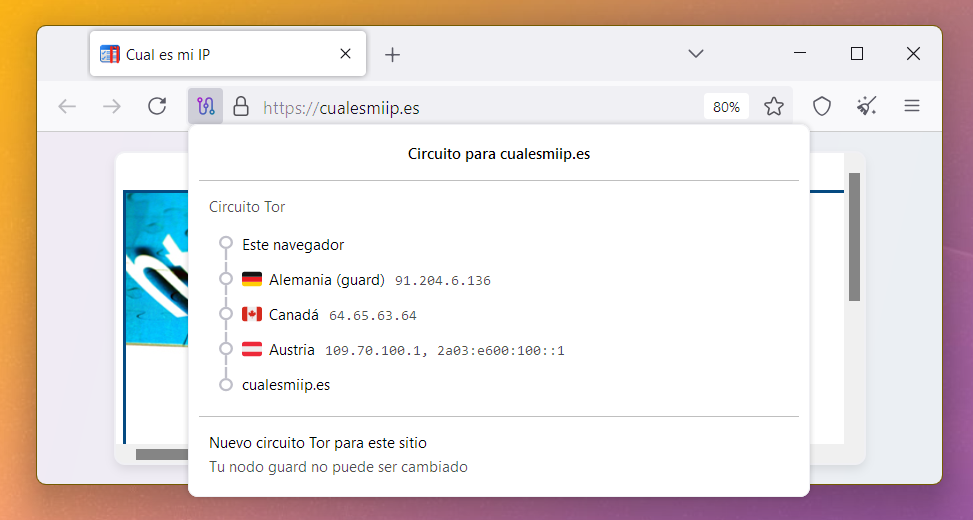
🧪 Práctica: VPN gratuita
Vamos a comprobar cómo cambia tu IP pública y tu localización al usar una VPN. Usaremos Browsec VPN, una extensión para el navegador fácil de instalar y gratuita.
🔧 Paso 1 – Instala la VPN
Abre Google Chrome o Microsoft Edge.
Ve a la Chrome Web Store y busca: Browsec VPN
O entra directamente en este enlace:
https://chrome.google.com/webstore/detail/browsec-vpn-free-vpn-for/omghfjlpggmjjaagoclmmobgdodcjbohHaz clic en
Añadir a Chrome→ "Añadir extensión"Verás el icono de Browsec en la esquina superior derecha del navegador (como un globo terráqueo 🌐)
🌍 Paso 2 – Comprueba tu IP real (sin la extensión activa)
Entra en esta web: https://cualesmiip.es
Anota o haz una captura de pantalla:
Tu IP pública
Tu país y/o ciudad estimados
🔐 Paso 3 – Activa la VPN
Haz clic en el icono de Browsec (🌐)
Pulsa Start VPN para activarla
Por defecto se conectará a un país, pero puedes seleccionar entre unos cuantos desde el desplegable.
🌍 Paso 4 – Comprueba tu IP con la VPN activa
Vuelve a https://cualesmiip.es
Fíjate en los cambios:
IP diferente
Geolocalización diferente
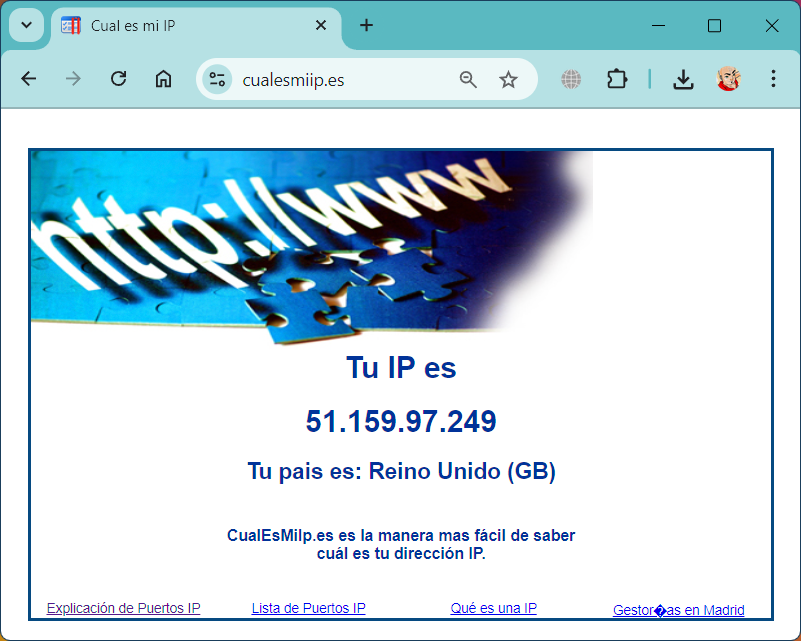
Tip
Puedes probar a cambiar el país en Browsec para ver cómo cambia tu ubicación virtual y probar otra web de geolocalización como:
https://whatismyipaddress.com
Caution
No protege todo el tráfico del ordenador, solo lo que pasa por el navegador donde está activada la extensión.
💬 Preguntas para reflexionar
¿Qué ventajas e inconvenientes ves en este tipo de herramientas?
¿Qué utilidad real puede tener usar una red VPN para falsear tu ubicación?
🔒 Gestores de contraseñas
Un gestor de contraseñas es una herramienta que sirve para guardar, crear, organizar y proteger todas tus contraseñas de forma segura. En lugar de tener que memorizar 20 contraseñas distintas (o peor, usar la misma en todas partes 😅), usas una sola contraseña maestra para acceder a tu “caja fuerte digital”.
Tip
La mayoría de brechas de seguridad se deben a contraseñas débiles o repetidas. Un gestor te permite usar contraseñas fuertes y diferentes para cada servicio, sin tener que recordarlas todas.
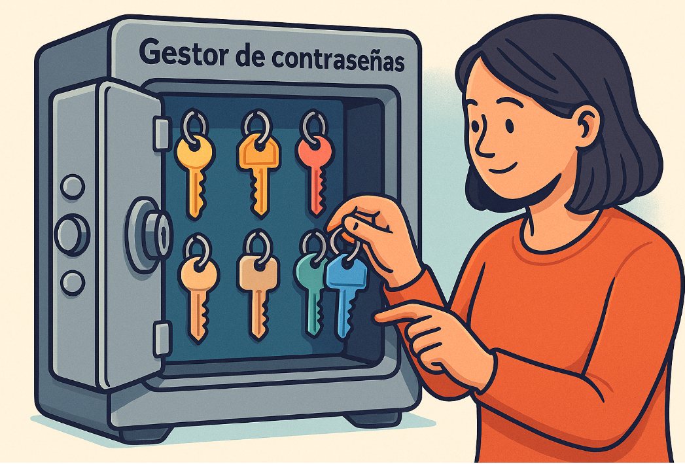
🟡¿Qué puede hacer un gestor de contraseñas?
Guardar contraseñas, PINs, notas seguras, tarjetas…
Generar contraseñas aleatorias y fuertes
Rellenar automáticamente los formularios de acceso
Sincronizar tus contraseñas entre distintos dispositivos
Compartir contraseñas con personas de la empresa de forma controlada (ejemplo: compartes solo las de desarrollo, pero no las del banco)
Alertarte si alguna contraseña ha sido filtrada en Internet
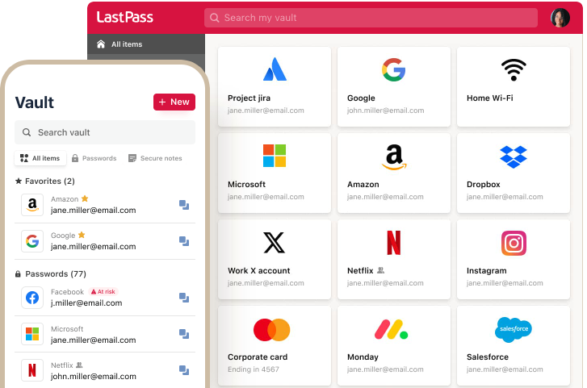
Tip
Con los generadores de contraseñas puedes generar claves seguras según los criterios que necesites, asegurándote que nunca se repiten ni que sigan un patrón distinguible.
🟡Ejemplos de gestores conocidos:
Bitwarden (gratuito y de código abierto, de pago para empresas)
LastPass (freemium)
1Password (de pago)
Dashlane, NordPass, etc.
También los navegadores (como Chrome o Firefox) tienen gestores integrados, aunque más básicos
Note
Los gestores almacenan la información cifrada. Ni siquiera el proveedor puede ver tus contraseñas si no conoce tu clave maestra.
🟡¿Y si pierdes la contraseña maestra?
En la mayoría de gestores, no se puede recuperar. Esto está hecho así a propósito, por seguridad. Por eso es muy importante:
Usar una clave maestra fuerte pero recordable
Activar la verificación en dos pasos
Hacer copia de seguridad de las contraseñas (segura, claro)
Warning
¿Y si alguien accede al gestor? Al centralizar todas nuestras contraseñas en un mismo lugar, también creamos un único punto crítico de seguridad. Si alguien consiguiera acceder a nuestro gestor, tendría acceso a todos nuestros servicios. Por eso es vital proteger el gestor con una contraseña maestra fuerte, usar verificación en dos pasos (MFA) siempre que sea posible, y evitar acceder desde dispositivos inseguros o públicos.
🔑 Autenticación multifactor (MFA)
La autenticación multifactor (MFA) es una medida de seguridad que exige más de un paso para verificar tu identidad cuando accedes a un sistema o servicio. Ya no basta con una simple contraseña: necesitas algo más.
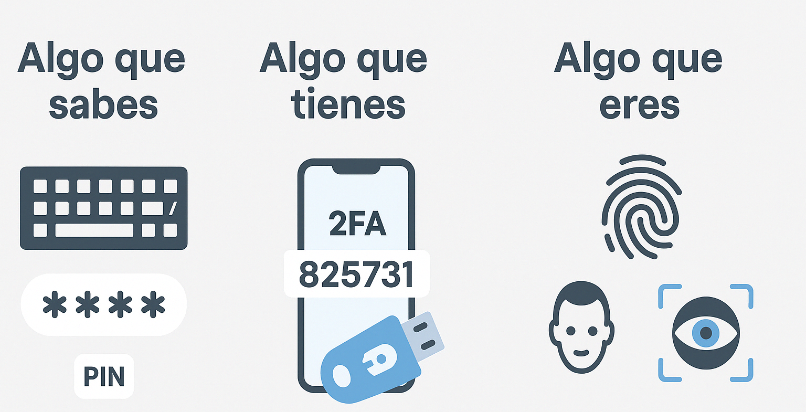
Hoy en día, la mayoría de servicios personales y empresariales ofrecen esta capa extra de seguridad durante el inicio de sesión. Siempre que sea posible, es más que recomendable activar MFA en los siguientes casos, ya que se trata de accesos críticos.
Correo corporativo (Outlook, Gmail o propio)
Acceso remoto por VPN
Sistemas en la nube (Google Workspace, Microsoft 365)
Paneles de administración de servidores o bases de datos
Plataformas de almacenamiento en la nube (Google Drive, OneDrive, Dropbox)
Gestores de contraseñas (Bitwarden, LastPass, 1Password)
Plataformas de mensajería interna (Slack, Microsoft Teams)
Aplicaciones de recursos humanos o nóminas
Sistemas CRM o ERP (Salesforce, Zoho, SAP...)
Acceso a servicios financieros o bancarios de la empresa
Tip
MFA significa que, aunque alguien consiga tu contraseña, no podrá entrar sin el segundo factor.
🔴¿Y 2FA es lo mismo que MFA?
No exactamente. 2FA es una forma específica de MFA que utiliza exactamente dos factores para verificar tu identidad. MFA puede usar dos o más factores, pero cuando hablamos de 2FA, nos referimos a un caso concreto de MFA con dos pasos.
Muy pocos sistemas implementan 3 o más factores (salvo entornos muy críticos o militares), por lo que MFA = 2FA en el 99% de los casos cotidianos.
Important
Aunque técnicamente MFA puede ser 2 o más factores, en el lenguaje habitual se usa como sinónimo de 2FA. Pero es bueno saber que hay una diferencia si algún día ves un sistema con 3 pasos.
🔴¿Qué tipos de factores hay?
Algo que sabes → tu contraseña o PIN
Algo que tienes → tu móvil, un código enviado por SMS, una app de autenticación
Algo que eres → tu huella dactilar, rostro, retina (biometría)
Con MFA, necesitas al menos dos de estos factores para poder acceder.
🔴Ejemplos de MFA en la vida real:
Inicias sesión en Gmail → te pide código por SMS o desde la app
Entras al banco online → además de la clave, te pide un número de coordenadas o tu huella
Accedes a un panel de administración en la empresa → contraseña + código de verificación de Google Authenticator
Note
MFA no solo se usa en apps o webs. También se puede aplicar en accesos a servidores, redes privadas (VPN), correo corporativo, etc.
🔴¿Qué herramientas permiten usar MFA?
Authy (permite sincronizar entre dispositivos)
Llaves físicas de seguridad como YubiKey o Titan Key
Verificación por SMS (menos segura, pero común)
🔴¿Por qué es tan importante hoy en día?
Porque las contraseñas se filtran o adivinan con más frecuencia de lo que pensamos. El MFA es una de las formas más efectivas y sencillas de evitar accesos no autorizados, incluso si te han robado la clave.
Important
Habilitar MFA en tus cuentas más importantes (correo, banco, redes sociales…) es probablemente la decisión más inteligente que puedes tomar en ciberseguridad personal.
⚠️ ¡Protege tus cuentas críticas con MFA!
Activar la autenticación multifactor (MFA) en cuentas personales como Google o Microsoft no es una recomendación: es una necesidad.
☁️ En una cuenta de Google puedes tener:
- Gmail (correos personales y laborales)
- Google Drive (documentos, hojas de cálculo, PDFs...)
- Google Fotos (fotos y vídeos personales)
- Historial de navegación y búsquedas (Chrome y Android)
- Contraseñas guardadas en Chrome y autocompletado de formularios
- Historial de ubicaciones
- Cuenta de YouTube, videos e historial de visionado
- Calendarios, contactos, notas y más
🪟 En una cuenta de Microsoft puedes tener:
- Correo de Outlook
- Archivos en OneDrive
- Cuenta de Windows (para iniciar sesión en el equipo)
- Suscripciones a Microsoft 365 (Word, Excel, Teams...)
- Historial de actividad en Edge
- Juegos digitales comprados y logros de Xbox
- Acceso a chats y contenido de Copilot
Toda esta información de años pueden descargarla en segundos. Y analizarla posteriormente con tranquilad.
Una contraseña fuerte no es suficiente. Activa el segundo factor. Es rápido, gratuito y te puede evitar un desastre.
🧪 Práctica: MFA
Vamos a comprobar si tenemos activado MFA en nuestras cuentas personales. Haremos una comprobación en dos plataformas muy comunes: Google y Microsoft.
Note
📱 Puedes hacer esta práctica desde tu móvil si no quieres iniciar sesión en tu cuenta personal desde el ordenador del aula. Solo necesitas acceder a los enlaces desde el navegador del móvil y seguir los mismos pasos.
🔐 Cuenta de Google
Accede a: https://myaccount.google.com/security
Baja hasta la sección “Cómo acceder a Google”
Busca el apartado “Verificación en dos pasos”
Si pone “Activada” ✅, ya tienes MFA habilitado.
Si no está activada, haz clic y sigue los pasos para configurarla (te pedirá iniciar sesión y luego añadir un método como SMS o Google Authenticator)
🔐 Cuenta de Microsoft (Outlook, Office 365, etc.)
Accede a: https://account.live.com/Activity
Inicia sesión con tu cuenta de Microsoft si no lo has hecho
Verás un panel con los métodos de inicio de sesión habilitados
Si tienes algo como “Aplicación de autenticación” o “Número de teléfono”, ¡ya tienes MFA!
Si no, pulsa en “+ Agregar método” y elige cómo proteger tu cuenta (app, SMS, email…)
Tip
Puedes activar MFA incluso si no te obliga la plataforma. Es una medida sencilla que te protege muchísimo.
Tip
Puedes usar las aplicaciones de autenticación de Google y Microsoft indistintamente para ambas cuentas. Es decir, puedes usar la de Google para iniciar sesión en Google y en Microsoft y viceversa. No es necesario usar ambas aplicaciones.
💬 Preguntas para reflexionar:
¿Tenías activado MFA antes de esta práctica?
¿Qué método has elegido o ya tenías configurado?
¿En qué otras cuentas personales crees que deberías activarlo también?
🕵️♀️ Caso real
Durante la comprobación de la actividad de inicio de sesión en una cuenta de Microsoft o Google, puede que observes algo curioso: intentos fallidos de inicio de sesión cada pocas horas desde lugares como Rusia, China, Estados Unidos o cualquier parte del mundo.
Note
😱Estás viendo captura reales de intentos de inicio de sesión en mi cuenta personal de Microsoft.
⬜¿Qué está pasando?
Esto ocurre porque tu dirección de correo puede estar incluida en alguna base de datos filtrada en Internet. Sobre todo si la cuenta tiene mucho tiempo 👴.
Usan bots para intentar acceder a cuentas con millones de correos conocidos.
Prueban contraseñas comunes o combinaciones filtradas.
Cambian la IP o el país desde donde lo hacen para no ser bloqueados automáticamente.
Note
Esto se llama fuerza bruta distribuida o ataque por diccionario desde IP rotativas.
⬜¿Qué hacer si lo detectas?
No entres en pánico, pero toma medidas.
Asegúrate de tener una contraseña fuerte, única y no reutilizada.
Activa la autenticación multifactor (MFA) si aún no lo has hecho.
Si ya tienes MFA, puedes estar tranquilo: aunque adivinen tu contraseña, no podrán entrar sin el segundo factor.
Revisa de vez en cuando tu actividad de inicio de sesión en Microsoft o en actividad de Google para detectar accesos sospechosos.
Este tipo de ataques son muy comunes, pero con buenas prácticas de seguridad digital, no representan una amenaza real si estás protegido.
Políticas de seguridad en el entorno laboral
En cualquier organización, la seguridad informática no depende solo de programas o herramientas, sino también del comportamiento de las personas.
Por eso existen las políticas de seguridad: un conjunto de normas y recomendaciones internas que indican cómo deben usarse los sistemas, dispositivos y servicios de forma segura.
Cada empresa tiene sus propias normas adaptadas a su realidad, pero muchas de ellas comparten principios comunes que repasamos a continuación.
🏢Políticas clave más habituales
🔐Uso seguro de contraseñas
Se recomienda el uso de contraseñas fuertes, no reutilizadas y actualizadas regularmente. En muchos casos se exige MFA.📱Dispositivos personales (BYOD)
Si se permite el uso de dispositivos personales, suelen exigirse requisitos mínimos como tener antivirus, cifrado de disco, bloqueo automático, etc.🌐Acceso remoto y VPN
Para trabajar desde fuera de la oficina, normalmente se exige el uso de una VPN corporativa y autenticación segura.🧩Uso de software autorizado
Solo se permite instalar programas previamente aprobados por el departamento de IT. Ejemplo: Si la empresa usa Onedrive, no almacenes documentos en Dropbox.✉️Navegación segura y uso del correo
No acceder a páginas web no relacionadas con el trabajo ni abrir archivos o enlaces sospechosos.🚨Gestión de incidentes
Si detectas algo raro (archivos que desaparecen, comportamiento extraño del equipo...), hay que informar al responsable de seguridad o al técnico.🧠Formación y concienciación
Es habitual que la empresa imparta formación básica de ciberseguridad, como identificar un phishing o el uso de contraseñas seguras. También suelen enviar emails falsos de phishing regularmente para comprobar que todo el mundo cumple las normas.
⚠️ Consecuencias de no cumplirlas
Ignorar estas políticas puede poner en riesgo la seguridad de toda la empresa, incluso por un descuido menor.
Algunos ejemplos reales:
Dejar la sesión abierta en un equipo compartido → otro usuario accede y borra documentos importantes.
Usar la misma contraseña para todo → una filtración en otra web permite acceder a la cuenta de trabajo.
Instalar un programa desde Internet → contiene malware y compromete la red interna.
Abrir un correo con adjunto sospechoso → lanza un ransomware que cifra todos los archivos compartidos.
Warning
La mayoría de los incidentes de seguridad se deben a errores humanos. Seguir las políticas no es burocracia: es proteger el trabajo de todos.
Important
Un error de este tipo puede tener consecuencias legales importantes, y en el mejor de los casos, podrías acabar perdiendo tu trabajo.
📃 Ejemplos de situaciones reales
Para entender mejor cómo se aplican las herramientas y políticas de seguridad que hemos visto, aquí tienes algunos ejemplos reales (o inspirados en casos muy comunes) que muestran lo fácil que es cometer un error… o prevenirlo a tiempo.
📎 Caso 1: Contraseña débil
Un empleado de oficina usaba como contraseña el nombre de su perro seguido de 123. Un ciberdelincuente probó combinaciones típicas y consiguió entrar a su correo. Desde allí, accedió a documentos internos de la empresa y contactos.
➡️ Lección: una contraseña débil puede abrir la puerta a toda la red de la empresa.
📎 Caso 2: Pendrive encontrado
Una trabajadora encontró un pendrive tirado en el suelo de la oficina. Por curiosidad, lo conectó a su ordenador. El pendrive contenía un ejecutable con malware que se activó automáticamente y dejó una puerta abierta para accesos remotos.
➡️ Lección: nunca conectes dispositivos desconocidos, aunque parezcan inofensivos.
📎 Caso 3: No cerrar sesión
Un técnico dejó su sesión abierta en un ordenador compartido durante el descanso. Otro compañero, sin mala intención, entró en su correo y respondió a un cliente pensando que era su propia cuenta.
➡️ Lección: no cerrar sesión puede generar malentendidos o consecuencias graves.
📎 Caso 4: El phishing que parecía real
Una empleada recibió un correo con aspecto oficial que decía que su cuenta de Microsoft estaba en peligro. Hizo clic en el enlace e introdujo sus datos en una web falsa. Al cabo de unos minutos, alguien ya estaba entrando desde otra ubicación.
➡️ Lección: el phishing es cada vez más convincente. Hay que comprobar siempre el remitente y la URL antes de hacer clic.
📎 Caso 5: No usar MFA
Un directivo accedía a servicios críticos solo con su contraseña, sin autenticación en dos pasos. Esa contraseña apareció filtrada en Internet, y un atacante la usó para acceder al portal del proveedor. Casi se realiza un pedido de miles de euros a una dirección fraudulenta.
➡️ Lección: activar MFA puede ser lo único que te salve, incluso con una contraseña robada.
📎 Caso 6: Portátil sin cifrar
Un comercial perdió su portátil de empresa en un viaje en tren. El equipo no estaba cifrado, y no tenía contraseña de arranque. Aunque el sistema operativo estaba protegido, al conectar el disco duro a otro equipo, se pudo acceder a todos los documentos y datos de clientes sin problema.
➡️ Lección: cifrar el disco puede evitar que la información caiga en manos equivocadas.
📎 Caso 7: VPN desactivada fuera de la oficina
Un trabajador accedió al sistema de gestión de la empresa desde un Wi-Fi público sin conectarse a la VPN corporativa. Un atacante en la misma red pudo interceptar datos sensibles con una herramienta de análisis de tráfico.
➡️ Lección: usar siempre una VPN en redes no seguras evita filtraciones de datos.
📎 Caso 8: Firewall desactivado por “molestias”
En una pequeña oficina, desactivaron el firewall de Windows porque daba problemas al compartir archivos por red. Poco después, una infección de malware se propagó a través del puerto abierto y afectó a todos los equipos conectados.
➡️ Lección: desactivar un cortafuegos por comodidad puede abrir la puerta a amenazas serias.
📎 Caso 9: El IDS avisó, pero nadie lo revisó
La empresa tenía instalado un IDS que generaba alertas sobre actividad inusual. Durante varios días, detectó múltiples accesos sospechosos en horario nocturno. Como nadie revisaba las alertas, no se actuó. Finalmente, se detectó que un empleado había instalado un software para minar criptomonedas en los servidores.
➡️ Lección: tener herramientas de detección no sirve de nada si nadie las monitoriza.
📎 Caso 10: Contraseñas guardadas en un Excel
Una persona tenía todas sus contraseñas personales y del trabajo guardadas en un archivo de Excel en su escritorio llamado contraseñas.xlsx. El equipo fue comprometido por un malware que buscaba este tipo de archivos. En segundos, las contraseñas estaban en manos de los atacantes.
➡️ Lección: usar un gestor de contraseñas seguro es mucho mejor que guardarlas en archivos abiertos.
Important
Estos casos no son extraordinarios. Son situaciones cotidianas que le pueden pasar a cualquiera. La ciberseguridad no va solo de grandes ataques: va de pequeñas decisiones diarias.